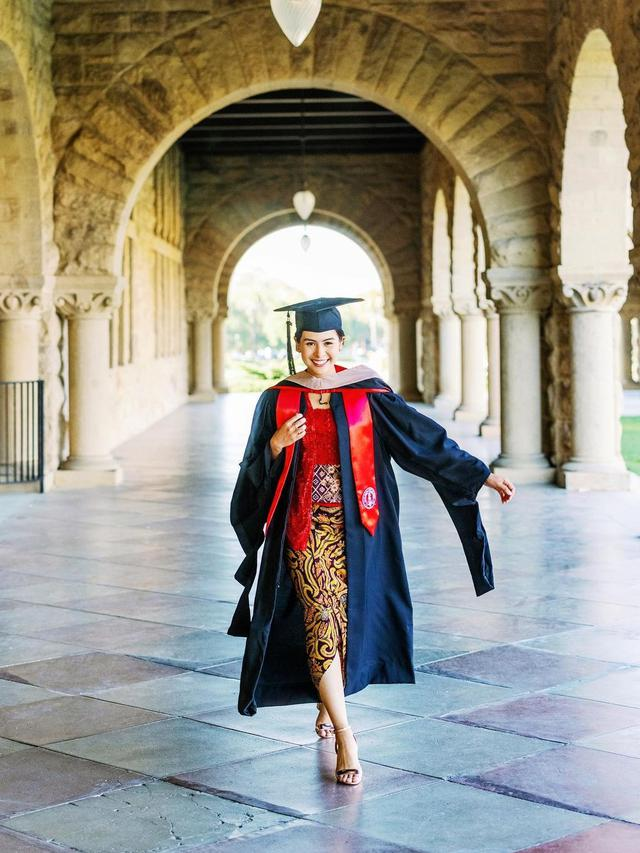

Maudy lahir dengan nama Ayunda Faza Maudya di Jakarta pada 19 Desember 1994.[1] Ia merupakan putri sulung dari pasangan orang tua Didit Jasmedi R. Irawan dan Muren Murdjoko.[2] Maudy memiliki seorang adik bernama Amanda Khairunnisa yang juga telah beberapa kali tampil sebagai aktris film.[3] Maudy memiliki hobi membaca dari kecil, ia belajar membaca di usia 3 tahun. Maudy menempuh sekolah dasar di SD Al-Azhar hingga kelas dua lalu pindah ke Sekolah Interkultural Mentari hingga lulus SMP. Awalnya, ia memiliki kendala bahasa dan harus beradaptasi menggunakan bahasa Inggris di sekolah internasional, sedangkan saat itu ia hanya terbiasa dengan bahasa Indonesia dan Jawa.[4] Setelah penampilan debutnya di film Untuk Rena, Maudy berhenti sejenak di dunia hiburan dan fokus pada pendidikannya. Maudy melanjutkan SMA di British School Jakarta. Saat itu, ia menjabat sebagai ketua OSIS.[5] Pasca kelulusan sekolah menengah, Maudy diterima di Universitas Oxford, Inggris dan mengambil jurusan PPE (Philosophy, Politics and Economics). Ia memulai studi pada September 2013 dan lulus pada tahun 2016.[6] Pada tahun 2019, Maudy melanjutkan kuliah untuk gelar S2 dan berhasil diterima di dua universitas ternama dunia yaitu Universitas Harvard dan Universitas Stanford.[7] Ia memutuskan untuk kuliah di Universitas Stanford dan lulus pada tahun 2021 dengan gelar ganda untuk jurusan bisnis (M.B.A.) dan pendidikan (M.A.).[8][9]
Kisah Maudy Ayunda menjadi salah satu selebriti Indonesia yang memiliki banyak talenta. Memulai karier lewat seni peran pada 2005 lalu, gadis kelahiran 19 Desember 1994 itu menghabiskan masa remajanya lewat berbagai peran di banyak judul sinetron.Beranjak dewasa, Maudy Ayunda lantas mengepakkan sayapnya ke jangkauan yang lebih besar di industri hiburan. Ia lantas bertransformasi menjadi seorang penyanyi pada 2011 lewat debut album yang berjudul Panggil Aku. Tak cuma bernyanyi, ia juga piawai dalam memainkan banyak instrumen musik seperti gitar dan piano. Dari dulu dia selalu belajar agar mencapai cita cita nya .Dari dua karier yang dijalani, pemain film Perahu Kertas itu juga sempat diganjar beberapa penghargaan baik di bidang seni peran maupun tarik suara. Di usia yang masih terbilang muda, Maudy Ayunda bisa dibilang sudah menjadi panutan bagi generasinya. Memiliki karier yang cemerlang diusia muda nampaknya tak membuat Maudy Ayunda puas. Di puncak popularitasnya, Maudy lantas berbelok arah menjauh dari sorot kamera ketika memutuskan untuk mengejar gelar akademis.Tak tanggung-tanggung, Maudy Ayunda saat ini berstatus sebagai lulusan dari Oxford University untuk jenjang S1 dan lulus pada 2016 lalu. Tak berpuas, ia kemudian, ia langsung melanjutkan menempuh gelar Magister di Stanford University dan dinyatakan lulus pada 2021.